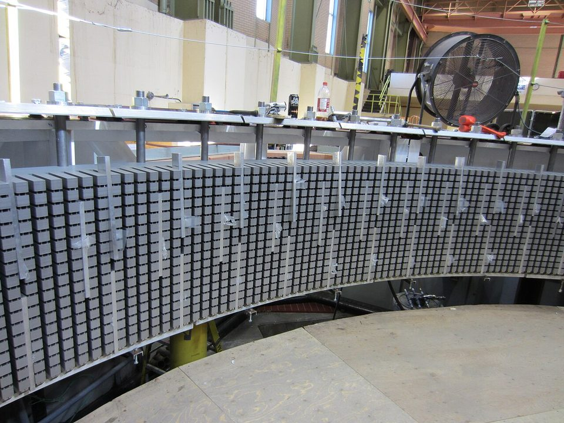
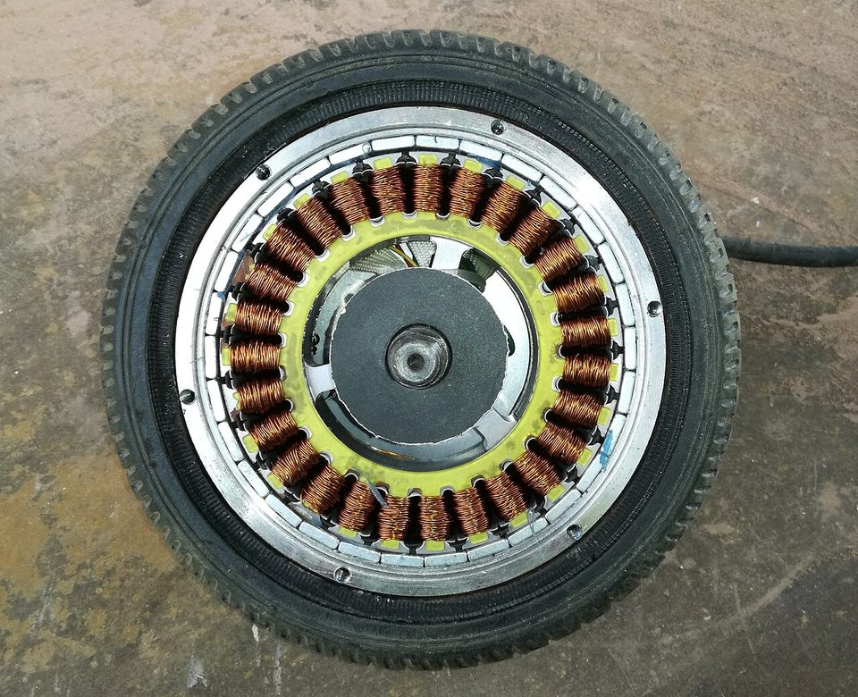
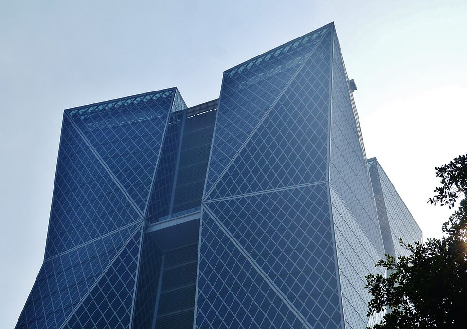

ADVANCED MOBILITY · ELECTRICAL STEEL · CSC
中鋼與電磁鋼片：從冷氣壓縮機到電動車、無人機的 37 年
鋼鐵潮流工作室 · 發布 2026.10.06

本期重點
電磁鋼片是中鋼「精緻鋼品」的核心。中鋼 1989 年起供應馬達用電磁鋼片，在缺乏國外技術奧援的情況下自行發展製程，2017 年以 0.25 mm 薄規產品打入 Tesla Model 3 馬達供應鏈，如今已推進到 0.1 mm 的無人機與機器人用料。精緻鋼品只占中鋼銷售量約一成，卻貢獻九成以上毛利。
- 起源：1989 年起供應一般馬達用電磁鋼片，1993 年開發成功 50A1300 品級電磁鋼捲，應用包括冷氣壓縮機等家電馬達。
- 技術：以薄化、低鐵損、高強度與自黏塗膜為主軸，厚度從 0.50 mm 一路推進到 0.20 mm、0.15 mm，2026 年開發出 0.1 mm。
- 布局：台灣第三條電磁鋼片產線與 150 億元極薄專線、越南與印度海外據點，薄頂規電磁鋼年產能提升到 20 萬噸。
- 實績：2024 年電磁鋼片內外銷約 39 萬噸，國內市占 79%；電動車用電磁鋼曾占全球約三成市場。
- 挑戰：韓國與中國低價進口衝擊中低階市場，財政部 2026 年 9 月認定傾銷，開始課徵臨時反傾銷稅。
關鍵數字
電磁鋼片是什麼
電磁鋼片又稱矽鋼片，是在鋼中加入約 0.5～3% 的矽，提高電阻、降低磁滯與渦流損失的軟磁材料。馬達、發電機、變壓器的鐵芯，都是把電磁鋼片沖成特定形狀後一片片疊起來。依結晶方向可分為兩類：
- 方向性電磁鋼片：晶粒沿軋延方向排列，單一方向磁性極佳，主要用於變壓器。
- 無方向性電磁鋼片：各方向磁性均勻，適合磁場不斷旋轉的馬達與發電機。中鋼的產品以無方向性為主，也是這次反傾銷案的標的。
判斷電磁鋼片好壞的關鍵指標是鐵損（瓦特／公斤），也就是鐵芯在交變磁場中轉成熱的能量損失；其次是磁通密度與機械強度。中鋼的品級代號直接標示這兩件事：例如「50CS1300」代表厚度 0.50 mm、鐵損規格值 13.0；「20CS1200FY」則是 0.20 mm 的高階產品。
技術：越薄越省電
電動車馬達轉速高、交變頻率高，渦流損失會隨頻率快速上升，而渦流損失與鋼片厚度的平方成正比，因此「薄化」是高階電磁鋼片的主戰場。中鋼總經理陳守道表示，厚度減半可讓鐵損降低約 25%。

除了薄化，中鋼的技術重點還有三項：
- 自主製程。 中鋼在缺乏國外技術與設備支援下，自行發展冶金與製程，建立獨特的熱軋、酸洗、退火製程與焊接技術，透過控制晶粒成長取得有利磁性的結晶方向。
- 高強度。 電動車馬達轉子高速旋轉，鋼片必須夠硬。2024 年發表的 20CS1200FY 厚度 0.2 mm，強度 430 MPa、比傳統產品高 5%，鐵損約低 6%。
- 自黏塗膜。 傳統鐵芯以鉚接或焊接固定，會破壞磁性。中鋼自行開發的自黏塗膜電磁鋼 25CS1250FY，鐵芯黏結強度高出 50 倍，鐵損比鉚接低 20%，馬達噪音降低 10 分貝。2023 年開發的 0.2 mm 無人機用鋼片同樣採用自黏技術，搭載的馬達通過國防部驗證，重量比國際大廠同規格產品輕 1.1%、扭力高 3.3%。
中鋼表示，全球能生產 0.1 mm 級超薄電磁鋼的鋼廠只有五家，其中能搭配特殊表面塗層的只有兩家，中鋼是其中之一。
發展歷程
| 年份 | 里程碑 |
|---|---|
| 1989 | 開始供應一般馬達用電磁鋼片，應用包括冷氣壓縮機等家電馬達 |
| 1993 | 開發成功 50A1300 品級電磁鋼捲，此後持續改良 |
| 2007 | 開始與知名電動車大廠合作，供應車用馬達所需的高效率電磁鋼片 |
| 2012 | 董事會決議投資新台幣 142 億元興建第三條電磁鋼片產線，年產能 15 萬噸，鎖定高階電動車馬達用料 |
| 2013 | 與日本住友金屬合資的越南中鋼住金（CSVC）連續退火塗覆線產出首批電磁鋼捲，供應越南與東協市場 |
| 2015 | 印度古吉拉特邦的中鋼印度（CSCI）電磁鋼片廠啟用，投資 71 億元、年產能 20 萬噸，供應當地馬達與變壓器廠 |
| 2017 | 0.25 mm 薄規電磁鋼片（25CS1250HF）用於 Tesla Model 3 馬達鐵芯 |
| 2020 | 電動車馬達用電磁鋼片全球市占達約三成 |
| 2023 | 開發 0.2 mm 無人機專用電磁鋼片，通過國防部驗證；全年電磁鋼片產量 50.3 萬噸 |
| 2024 | 發表 0.2 mm 高強度電動車用鋼（20CS1200FY）與自黏塗膜電磁鋼（25CS1250FY）；內外銷約 39 萬噸 |
| 2025 | 薄頂規電磁鋼年產能提升到 20 萬噸；自黏塗膜產品訂單預計突破 5,000 噸；12 月財政部應中鋼申請，對韓、中電磁鋼片展開反傾銷調查 |
| 2026 | 4 月串聯約 90 家國內廠商打造機器人動力系統供應鏈，並投資 150 億元建置極薄電磁鋼專線；5 月發表 0.1 mm 超薄電磁鋼片，切入無人機與機器人馬達；9 月財政部認定韓、中產品傾銷，開始課徵臨時反傾銷稅 |
布局：從台灣到東南亞與印度
- 台灣：高雄小港總廠為高階電磁鋼片主要生產基地。2012 年決議興建的第三條產線，鎖定 0.15 mm 等級的高階薄規產品，設備主要來自日本三菱等供應商。薄頂規產品年產能目前已達 20 萬噸。
- 越南：中鋼與日本住友金屬合資的越南中鋼住金（CSVC），2013 年起生產電磁鋼捲，就近供應東協馬達與家電廠。
- 印度：中鋼印度（CSCI）年產 20 萬噸，產品涵蓋低、中、高規格的馬達與變壓器用電磁鋼片，服務印度本地市場。
- 極薄專線與機器人供應鏈：中鋼投資 150 億元建置高階極薄電磁鋼專業產線，並串聯大亞、東元、富田、鴻海、和碩、上銀、全球傳動、達明機器人等約 90 家國內廠商與 7 個學研單位，打造機器人動力系統的「Team Taiwan」，從材料延伸到馬達試製與量產。

銷售實績
| 時間 | 指標 | 數據 |
|---|---|---|
| 2017 | Tesla Model 3 用 0.25 mm 頂規電磁鋼片年產量上限 | 約 5～6 萬噸 |
| 2020 | 電動車馬達用電磁鋼片全球市占 | 約 3 成 |
| 2021 | 供應全球最大電動車廠馬達電磁鋼片的比例 | 約 7 成 |
| 2023 | 電磁鋼片產量 | 50.3 萬噸 |
| 2023 | 電動車馬達用超能效電磁鋼全球市占 | 近 2 成 |
| 2024 | 電磁鋼片內外銷量 | 約 39 萬噸 |
| 2024 | 0.2 mm 電動車用鋼年訂單目標 | 4,500 噸 |
| 2025 | 國內電磁鋼片市占 | 79% |
| 2025 | 自黏塗膜電磁鋼訂單 | 預計突破 5,000 噸，未來有 2～3 倍成長潛力 |
| 2025 前三季 | 精緻鋼品占銷售量／毛利 | 11.6%／93.6% |
從數據可以看出兩個趨勢。第一，中鋼在電動車電磁鋼片的全球市占，從 2020 年約三成降到 2023 年的近兩成。全球電動車市場擴大，投入車用電磁鋼片的鋼廠增加，競爭明顯加劇。第二，獲利重心持續往頂級產品集中：精緻鋼品只占一成多的銷量，卻撐起九成以上的毛利，0.2 mm 以下、自黏塗膜等利基產品量雖小，卻是附加價值最高的部分。
挑戰：低價進口與反傾銷
中低階電磁鋼片面臨進口壓力。根據經濟部調查，自韓國與中國進口的冷軋無方向性電磁鋼片，從 2022 年約 1 萬噸增加到 2024 年約 3 萬噸，2025 年約 2.1 萬噸（韓國 1.6 萬噸、中國 0.5 萬噸），價格比中鋼牌價低 20～30%。
- 2025 年 12 月：財政部關務署應中鋼申請，對韓國與中國產品展開反傾銷調查，範圍為厚度 0.135～0.715 mm、表面塗有非金屬絕緣塗膜的冷軋無方向性電磁鋼片。
- 2026 年 2 月：經濟部初步認定有合理跡象顯示國內產業受損。
- 2026 年 9 月 15 日：財政部最終認定傾銷，韓國業者傾銷差率最高 59.35%、中國業者 26.44%，關務署開始依差率課徵臨時反傾銷稅；後續由經濟部審議產業損害，再由關稅稅率委員會決定是否正式課稅。
觀察重點
- 經濟部產業損害審議與關稅稅率委員會的最終決定，以及正式反傾銷稅率。
- 0.1 mm 超薄電磁鋼片的量產時程，與無人機、機器人馬達客戶的導入進度。
- 自黏塗膜產品能否如中鋼預期，訂單成長 2～3 倍。
- 電動車市場成長放緩與中國鋼廠擴產下，中鋼電動車電磁鋼片的全球市占走向。
- 2030 年精緻鋼品銷售量占比 20% 目標的達成進度。
延伸閱讀
資料來源
- 打造世界級的電磁鋼片（科技大觀園）
- 電磁鋼片產品手冊（中鋼）
- 中鋼電磁鋼片 決擴產（工商時報，2012-06-07）
- 中鋼 電磁鋼片 新產線 年產值44億（工商時報，2012-05-19）
- 中鋼越南鋼廠 首產電磁鋼捲（蕃新聞，2013-04-23）
- 中鋼扎根印度 電磁鋼片廠啟用（工商時報，2015-01-13）
- 全球僅三家！中鋼鋼片薄又硬 Tesla沒它跑不動（三立新聞，2017-06-21）
- 耕耘有成，中鋼電動車電磁鋼片全球市佔3成（MoneyDJ，2021-11-11）
- 擺脫景氣循環 中鋼擁電動車獨門技術走出新路（鉅亨網，2021-12-08）
- 中鋼成功研發0.2mm無人機專用電磁鋼片（遠見，2023-10-03）
- 中鋼拿下「馬達用超能效電磁鋼」近2成市占（旺得富理財網，2024-02-21）
- 中鋼電動車馬達用電磁鋼 年訂單拚4500公噸（工商時報，2024-06-12）
- 中鋼法說會重點內容備忘錄 20251125（富果）
- 陸韓進口電磁鋼片傾銷 經部認對產業造成損害（工商時報，2026-02-12）
- 電磁鋼片反傾銷調查延長初判期限（旺得富理財網，2026-04-16）
- 中鋼串聯國內大廠 建構台灣自主機器人動力系統供應鏈（優分析，2026-04-09）
- 中鋼 0.1mm 電磁鋼片切入無人機（TechNews，2026-05-22）
- 財部拍板中韓電磁鋼品傾銷 追繳反傾銷稅最高達59%（優分析，2026-09-15）
內容僅供產業資訊參考，不構成投資建議。新聞版權屬原出處所有。